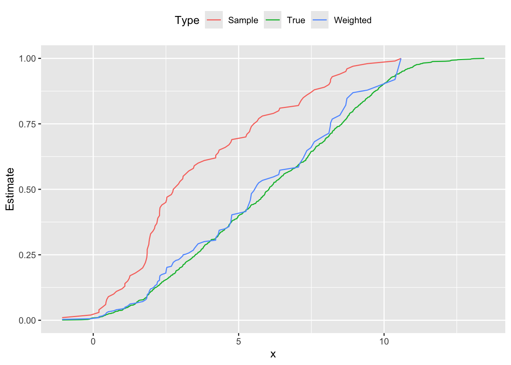

Direct Standardization
Introduction
Consider a set of observations \((x_i,y_i)\) drawn non-uniformly from an unknown distribution. We know the expected value of the columns of \(X\), denoted by \(b \in {\mathbf R}^n\), and want to estimate the true distribution of \(y\). This situation may arise, for instance, if we wish to analyze the health of a population based on a sample skewed toward young males, knowing the average population-level sex, age, etc. The empirical distribution that places equal probability \(1/m\) on each \(y_i\) is not a good estimate.
So, we must determine the weights \(w \in {\mathbf R}^m\) of a weighted empirical distribution, \(y = y_i\) with probability \(w_i\), which rectifies the skewness of the sample (Fleiss, Levin, and Paik 2003, 19.5). We can pose this problem as
\[ \begin{array}{ll} \underset{w}{\mbox{maximize}} & \sum_{i=1}^m -w_i\log w_i \\ \mbox{subject to} & w \geq 0, \quad \sum_{i=1}^m w_i = 1,\quad X^Tw = b. \end{array} \]
Our objective is the total entropy, which is concave on \({\mathbf R}_+^m\), and our constraints ensure \(w\) is a probability distribution that implies our known expectations on \(X\).
To illustrate this method, we generate \(m = 1000\) data points \(x_{i,1} \sim \mbox{Bernoulli}(0.5)\), \(x_{i,2} \sim \mbox{Uniform}(10,60)\), and \(y_i \sim N(5x_{i,1} + 0.1x_{i,2},1)\). Then we construct a skewed sample of \(m = 100\) points that overrepresent small values of \(y_i\), thus biasing its distribution downwards. This can be seen in Figure , where the sample probability distribution peaks around \(y = 2.0\), and its cumulative distribution is shifted left from the population’s curve. Using direct standardization, we estimate \(w_i\) and reweight our sample; the new empirical distribution cleaves much closer to the true distribution shown in red.
In the CVXR code below, we import data from the package and solve
for \(w\).
## Import problem data
data(dspop) # Population
data(dssamp) # Skewed sample
ypop <- dspop[,1]
Xpop <- dspop[,-1]
y <- dssamp[,1]
X <- dssamp[,-1]
m <- nrow(X)
## Given population mean of features
b <- as.matrix(apply(Xpop, 2, mean))
## Construct the direct standardization problem
w <- Variable(m)
objective <- sum(entr(w))
constraints <- list(w >= 0, sum(w) == 1, t(X) %*% w == b)
prob <- Problem(Maximize(objective), constraints)
## Solve for the distribution weights
result <- solve(prob)
weights <- result$getValue(w)
result$value## [1] 4.223305We can plot the density functions using linear approximations for the range of \(y\).
## Plot probability density functions
dens1 <- density(ypop)
dens2 <- density(y)
dens3 <- density(y, weights = weights)
yrange <- seq(-3, 15, 0.01)
d <- data.frame(x = yrange,
True = approx(x = dens1$x, y = dens1$y, xout = yrange)$y,
Sample = approx(x = dens2$x, y = dens2$y, xout = yrange)$y,
Weighted = approx(x = dens3$x, y = dens3$y, xout = yrange)$y)
plot.data <- gather(data = d, key = "Type", value = "Estimate", True, Sample, Weighted,
factor_key = TRUE)
ggplot(plot.data) +
geom_line(mapping = aes(x = x, y = Estimate, color = Type)) +
theme(legend.position = "top")## Warning: Removed 300 row(s) containing missing values (geom_path).Figure 1: Probability distribution functions population, skewed sample and reweighted sample
Followed by the cumulative distribution function.
## Return the cumulative distribution function
get_cdf <- function(data, probs, color = 'k') {
if(missing(probs))
probs <- rep(1.0/length(data), length(data))
distro <- cbind(data, probs)
dsort <- distro[order(distro[,1]),]
ecdf <- base::cumsum(dsort[,2])
cbind(dsort[,1], ecdf)
}
## Plot cumulative distribution functions
d1 <- data.frame("True", get_cdf(ypop))
d2 <- data.frame("Sample", get_cdf(y))
d3 <- data.frame("Weighted", get_cdf(y, weights))
names(d1) <- names(d2) <- names(d3) <- c("Type", "x", "Estimate")
plot.data <- rbind(d1, d2, d3)
ggplot(plot.data) +
geom_line(mapping = aes(x = x, y = Estimate, color = Type)) +
theme(legend.position = "top")
Session Info
sessionInfo()## R version 4.0.2 (2020-06-22)
## Platform: x86_64-apple-darwin19.5.0 (64-bit)
## Running under: macOS Catalina 10.15.6
##
## Matrix products: default
## BLAS/LAPACK: /usr/local/Cellar/openblas/0.3.10_1/lib/libopenblasp-r0.3.10.dylib
##
## locale:
## [1] en_US.UTF-8/en_US.UTF-8/en_US.UTF-8/C/en_US.UTF-8/en_US.UTF-8
##
## attached base packages:
## [1] stats graphics grDevices datasets utils methods base
##
## other attached packages:
## [1] tidyr_1.1.0 ggplot2_3.3.2 CVXR_1.0-8
##
## loaded via a namespace (and not attached):
## [1] gmp_0.6-0 Rcpp_1.0.5 highr_0.8 compiler_4.0.2
## [5] pillar_1.4.6 tools_4.0.2 digest_0.6.25 bit_1.1-15.2
## [9] evaluate_0.14 lifecycle_0.2.0 tibble_3.0.3 gtable_0.3.0
## [13] lattice_0.20-41 pkgconfig_2.0.3 rlang_0.4.7 Matrix_1.2-18
## [17] gurobi_9.0-3 Rglpk_0.6-4 yaml_2.2.1 blogdown_0.19
## [21] xfun_0.15 cccp_0.2-4 withr_2.2.0 dplyr_1.0.0
## [25] Rmpfr_0.8-1 stringr_1.4.0 knitr_1.28 generics_0.0.2
## [29] vctrs_0.3.2 tidyselect_1.1.0 bit64_0.9-7 grid_4.0.2
## [33] glue_1.4.1 R6_2.4.1 rmarkdown_2.3 bookdown_0.19
## [37] farver_2.0.3 purrr_0.3.4 magrittr_1.5 codetools_0.2-16
## [41] rcbc_0.1.0.9001 scales_1.1.1 htmltools_0.5.0 ellipsis_0.3.1
## [45] assertthat_0.2.1 colorspace_1.4-1 labeling_0.3 Rcplex_0.3-3
## [49] stringi_1.4.6 Rmosek_9.2.3 munsell_0.5.0 slam_0.1-47
## [53] crayon_1.3.4Source
References
Fleiss, J. L., B. Levin, and M. C. Paik. 2003. Statistical Methods for Rates and Proportions. Wiley-Interscience.